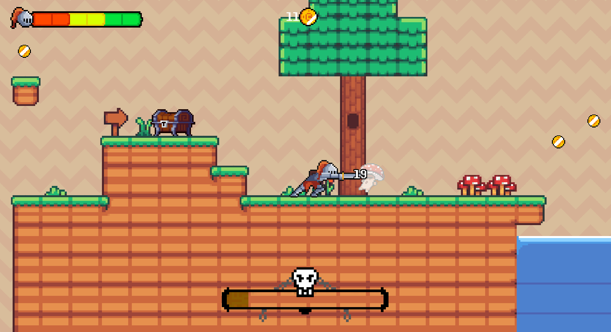

Decay

Motivation
The project itself was made in regard to a 48-hour game jam hosted on itch.io. In a game jam your goal is to create a game within a given time frame with specified requirements and rules. Our team was just a duo, me and @Arubaato, and the rules were very open and only specified the theme being decay.
After some brainstorming, we have decided to create a 2D pixel art platformer in the Godot open source game engine. For the resources, we have used royalty-free assets from itch.io and other websites, and modified them to our liking.
Game explanation
You are a knight trying to get to a safe place, whilst fighting enemies, collecting items and doing parkour. Be aware, the longer you take looting and fighting, the more your armor decays, making you more vulnerable to any attack.
note: the game name are just two random words 😆
Controls
- W, A, S, D, Space - movement
- E - interact
- Left Mouse - attack
- Right Mouse - Dash attack
Download
Be aware that this project might still have a few bugs and was meant to test how far we can build up a game in just 48h. It will not be modified or improved, in regard to bug fixing or content addition, anytime in the future.
© Made by Purpurax, Arubaato